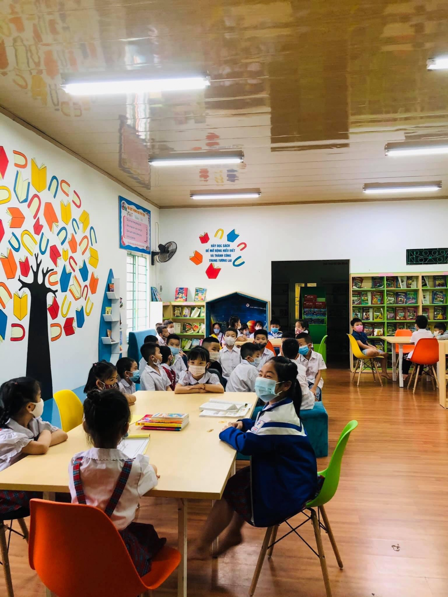
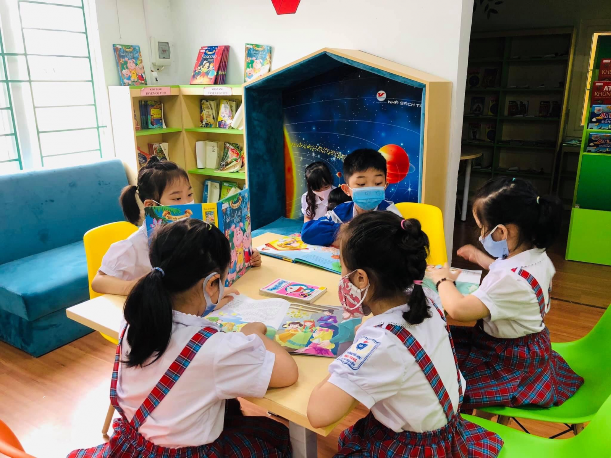
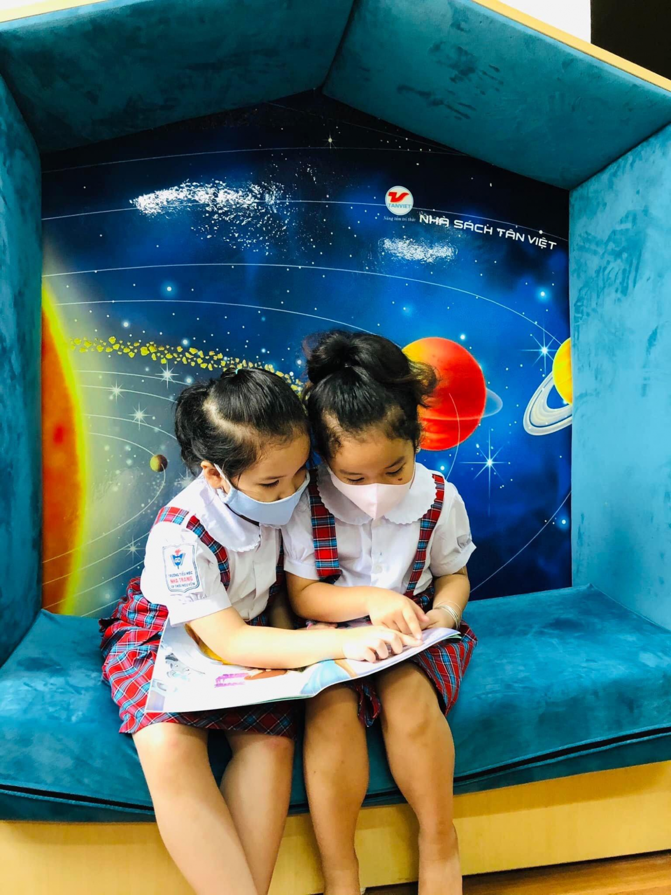
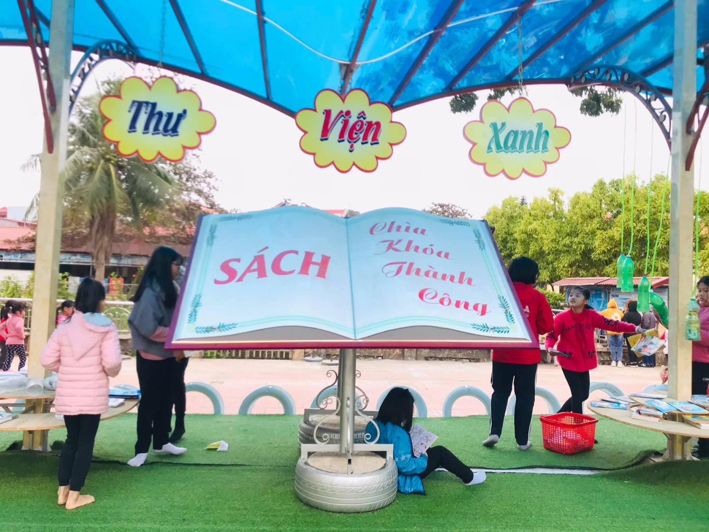
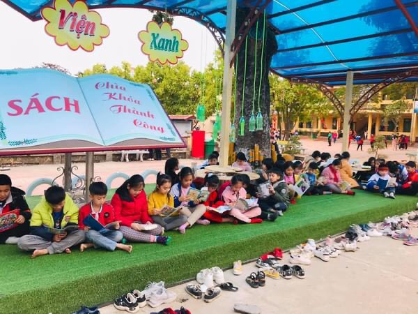
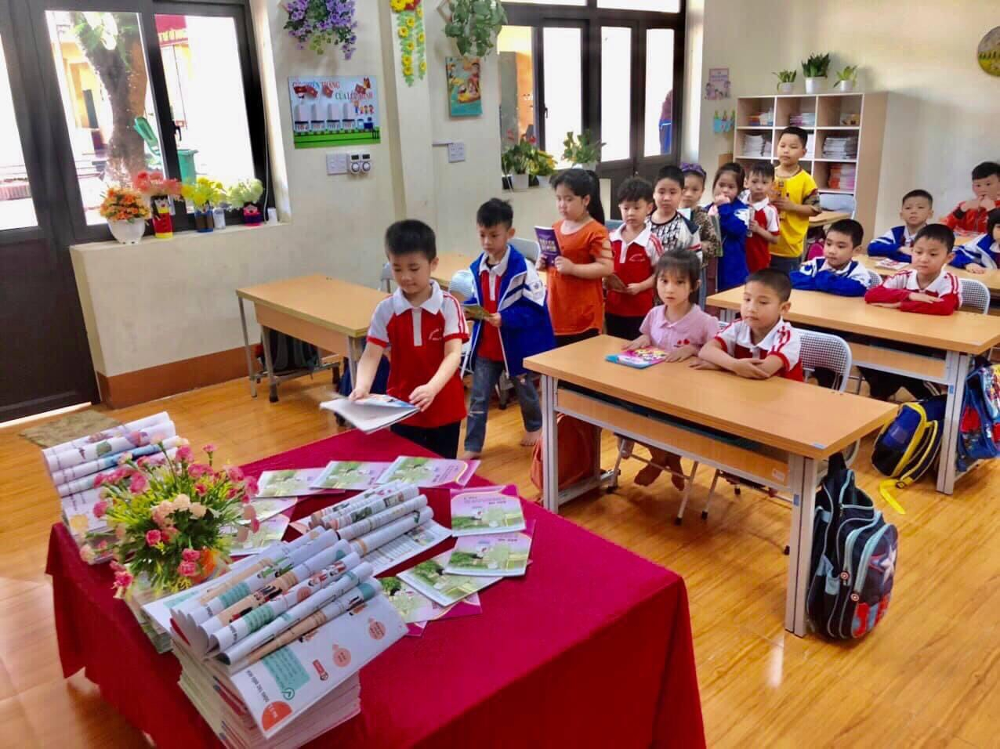
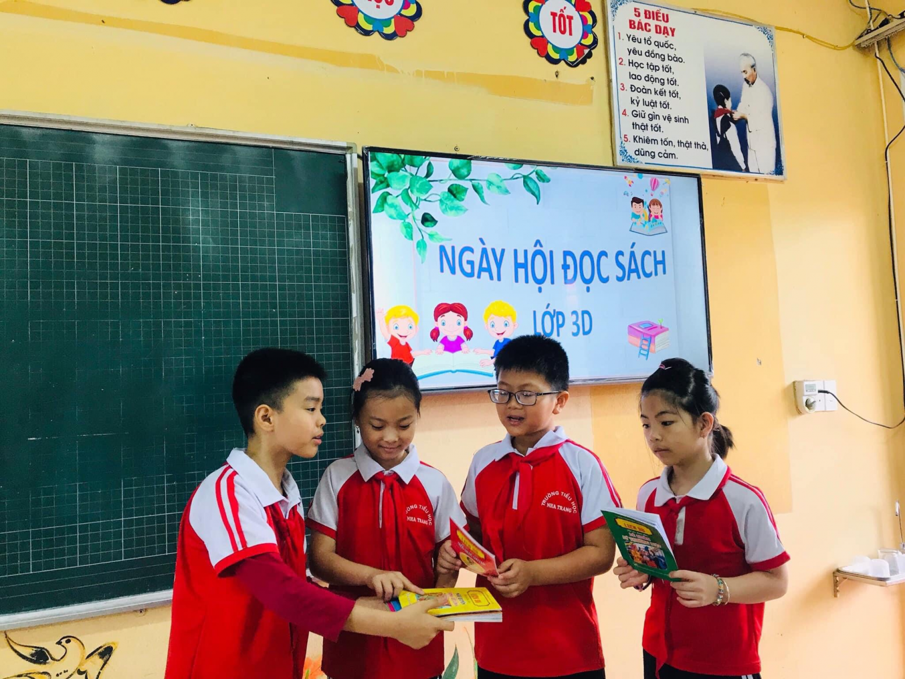
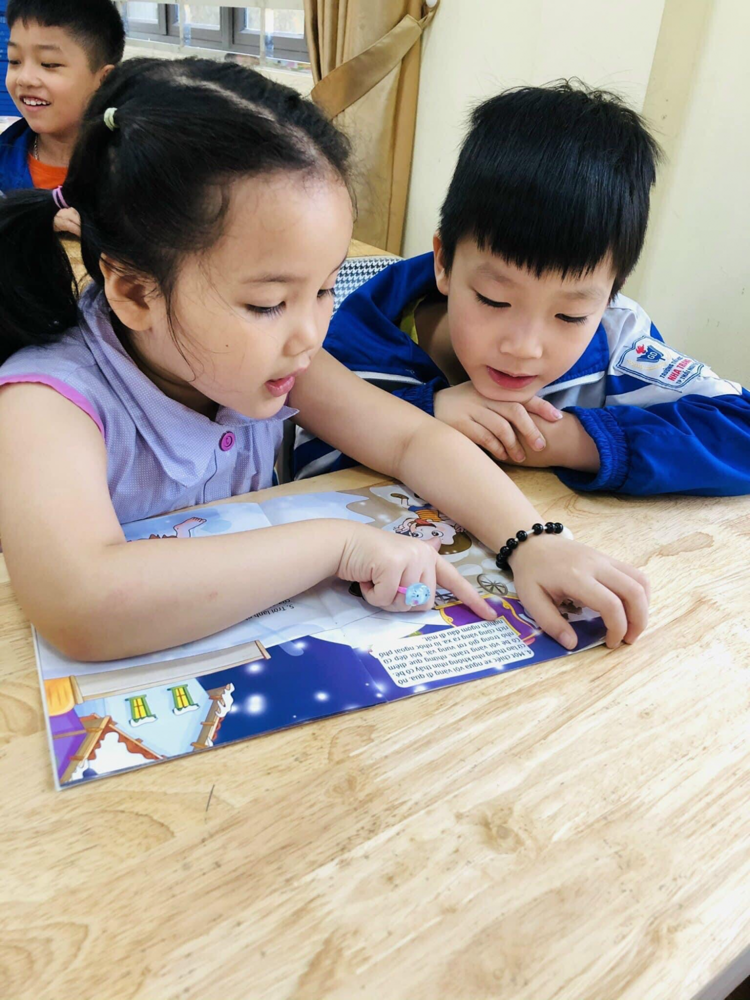

VÀI NÉT VỀ THƯ VIỆN TRƯỜNG TIỂU HỌC NHA TRANG
Có một câu nói rất nổi tiếng của nhà văn M.Go-rơ-ki được đông đảo mọi người biết đến “Sách mở ra trước mắt tôi những chân trời mới”. Quả đúng như vậy, việc đọc sách từ lâu đã trở thành một nhu cầu không thể thiếu trong hành trình tìm kiếm tri thức và hoàn thiện nhân cách của mỗi người.
Hiểu được tầm quan trọng của sách, trường Tiểu học Nha Trang đã luôn có ý thức xây dựng một thư viện sách thật sự chất lượng để phục vụ cho nhu cầu học tập và nghiên cứu của học sinh và cán bộ giáo viên trong nhà trường.
- Tổng quan
Thư viện nhà trường đã dần lớn mạnh nhờ sự đầu tư hiệu quả của nguồn ngân sách nhà trường và sự đóng góp xây dựng của các thế hệ giáo viên và học sinh. Đến hôm nay, thư viện đã trở thành một địa điểm hấp dẫn đối với mỗi thành viên trong nhà trường.
Tổng diện tích 2 khu thư viện là 300m2 , trong đó diện tích khu thư viện thân thiện 300m2, khu thư viện xanh 100m2. Thư viện được trang trí đẹp, khoa học, các loại sách báo được sắp xếp theo danh mục thuận lợi cho việc tìm kiếm.
Tính đến 7 năm 2021 tổng số tài liệu thư viện là: 11.551 bản trong đó mới được đầu tư thêm 2000 cuốn tài liệu đã được sắp xếp riêng biệt theo từng loại:
+ Sách nghiệp vụ + Sách giáo khoa + Sách tham khảo
+ Sách đạo đức + Sách pháp luật + Sách thiếu nhi
Toàn bộ số sách trên đúng chủng loại, đủ số lượng theo quy định của Công văn số 11185/BDG&ĐT ban hành ngày 17 tháng 12 năm 2004 của Bộ GD&ĐT .
Thư viện nhà trường đã tích cực, sáng tạo trong việc tổ chức các hoạt động như thi viết về Thày cô và Mái trường,vẽ tranh theo sách lịch sử, vẽ tranh theo sách, kể chuyện theo sách, tổ chức ngày hội đọc sách, quyên góp sách,... Các thầy cô giáo tích cực cùng với cán bộ thư viện trang trí phòng thư viện thân thiện, thư viện xanh ngoài trời để tạo không gian gần gũi cho thầy và trò khi đọc sách, từ đó nâng cao văn hóa đọc trong nhà trường, thu hút được nhiều bạn đọc đến với thư viện.
II. Tổ chức, sắp xếp
Thư viện xây dựng kho sách theo hình thức Mở - Hiện đại- Thân thiện. Tại thư viện sách được phân loại theo các mảng kiến thức và trưng bày trên kệ. Giáo viên và học sinh dễ dàng tìm sách phù hợp với nhu cầu của mình và tự lấy được sách để đọc. Trang thiết bị trong thư viện được sắp xếp hợp lí, bạn đọc dễ dàng di chuyển để chọn sách và đọc sách. Thư viện có đủ không gian để học sinh tham gia vào các hoạt động: cá nhân, cặp đôi, nhóm, có đủ không gian phục vụ mượn trả sách. Đồng thời có thời khóa biểu tiết đọc tại thư viện của tất cả các lớp.
Với thiết kế trên thư viện đã tạo cơ hội cho giáo viên và học sinh được tiếp cận thông tin, xây dựng thói quen đọc sách và tích cực tham gia các hoạt động của thư viện. Thư viện đến với người sử dụng một cách linh hoạt, hiệu quả. Phát triển mối quan hệ thân ái, cởi mở tích cực giữa thủ thư và học sinh, giáo viên và học sinh, học sinh và học sinh, giáo viên và giáo viên, thủ thư và giáo viên. Cách bài trí trong thư viện cũng rất hợp lí. Bên cạnh các giá sách là “bảng sách mới” với những thông tin về danh mục sách mới để bạn đọc của thư viện có thể cập nhật thông tin một cách dễ dàng.
III. Một số hoạt động
Ngay từ những ngày đầu mới hoạt động, các cán bộ thư viện tâm huyết với nghề đã phối hợp cùng các giáo viên chủ nhiệm tổ chức được rất nhiều hoạt động bổ ích lôi cuốn các em học sinh đến với thư viện.
Một trong những hoạt động nổi bật nhất là Tổ chức ngày hội đọc sách và cuộc thi: “Kể chuyện theo sách” nhận được sự hưởng ứng tham gia của rất nhiều các bạn học sinh của trường. Đây là hoạt động ý nghĩa nhằm giúp học sinh có cái nhìn gần gũi, chia sẻ hơn đối với người thầy của mình.
Thư viện cũng đã tổ chức cuộc thi giới thiệu sách dành cho học sinh khối 4,5 hoạt động này đã khơi dậy niềm đam mê đọc sách cho các em.
Đặc biệt, Thư viện đã phát động các phong trào quyên góp sách tạo điều kiện cho các em học sinh thể hiện tình yêu đối với sách và ý thức chia sẻ nguồn tri thức với mọi người. Hoạt động này được tổ chức hàng năm, được xem là hoạt động truyền thống của thư viện cũng như của nhà trường, được các em học sinh và các thầy cô giáo trong trường hưởng ứng nhiệt tình. Nhờ đó thư viện luôn luôn được bổ sung nguồn tài liệu phong phú, đa dạng. Chính vì hoạt động này mà nhiều học sinh đã trở thành những cộng tác viên đắc lực hỗ trợ thư viện trong công tác xử lý nghiệp vụ, phục vụ tuyên truyền một cách nhiệt tình.
Sau nhiều cố gắng phát triển, thư viện trường Tiểu học Nha Trang đã được tặng danh hiệu thư viện xuất sắc và trở thành điểm giao lưu tri thức của tập thể cán bộ, giáo viên, công nhân viên và học sinh trong toàn trường.
Một số hình ảnh hoạt động thư viện Trường Tiểu học Nha Trang:







